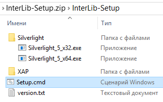
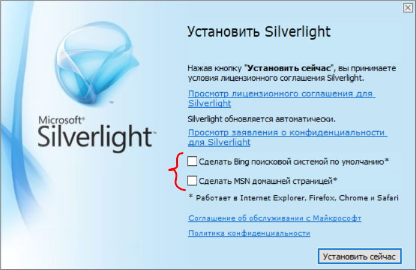
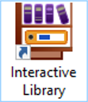

Уважаемые пользователи! С этой страницы вы можете скачать и установить на свой компьютер
программное
приложение «Интерактивная библиотека» Данная система представляет собой программную
оболочку для работы
с интерактивными виртуальными учебными материалами ориентированными на
лингводидактические
задачи. После установки программа предоставляет доступ к набору виртуальных учебников и
пособий по РКИ
(русский как иностранный) созданных сотрудниками Института международного
образования Воронежского
государственного университета. Предлагаемый материал может использоваться в
вузах и других учебных
заведениях в которых проходят обучение иностранные студенты.
«Интерактивная библиотека» является десктоп-приложением построенным на базе технологии Microsoft Silverlight поэтому
способна работать только на персональных компьютерах и ноутбуках под
управлением операционной системы
Windows версии 7/8/10 и последующих.
Данное программное приложение распространяется его автором/разработчиком
совершенно
бесплатно без
каких-либо дополнительных обязательств. Более подробную информацию о способе установки
программы на свой
компьютер смотрите ниже.
Перед началом работы с программой предлагается посмотреть вот эту презентацию в
которой показаны ключевые идеи заложенные в систему управления виртуальными
учебниками чем по сути
является "Интерактивная библиотека". Презентация также поможет в общих чертах
ознакомиться с
пользовательским интерфейсом программы.
Инструкция по установке
-
Загрузите архивный файл, содержащий установочный пакет программы (файл
InterLib-Setup.zip), на свой компьютер.
-
Извлеките из архивного файла (.zip) папку "
InterLib-Setup" в любое место на своём компьютере (рекомендуется на Рабочий стол).
Содержимое папки показано ниже:

-
Внимание!
Для работы программы «Интерактивная библиотека» требуется плагин
Microsoft Silverlight версии 5+. Если данный плагин уже установлен на вашем
компьютере,
то текущий пункт следует пропустить.
Установка Microsoft Silverlight
- Откройте папку "Silverlight", расположенную в корневой папке архива (папка
"InterLib-Setup").
- Запустите на выполнение (двойной щелчок) один из двух файлов: "Silverlight_5_x32.exe" или
"Silverlight_5_x64.exe" (в зависимости от разрядности вашей операционной системы: 32 или
64).
- Следуйте инструкциям Мастера установки.
Рекомендация! В начальном окне Мастера установки снимите флажки с
предлагаемых опций:
[Сделать Bing поисковой системой по
умолчанию]
[Сделать MSN домашней
страницей]
(как показано ниже)

Дополнительные материалы по Microsoft Silverlight можно найти на официальном сайте
корпорации
Майкрософт по следующей ссылке:
Get
Microsoft Silverlight.
- После завершения инсталляции плагина
Microsoft Silverlight можно переходить к следующему шагу:
непосредственной
установке «Интерактивной библиотеки».
-
Из папки "InterLib-Setup" запустите на выполнение (двойной щелчок) файл
"Setup.cmd" и дождитесь появления сообщения "Установка завершена!" После этого на
рабочем столе должен появиться ярлык установленного приложения
«Интерактивная библиотека» следующего вида:

-
Внимание!
При попытке запуска установщика программы операционная система Windows
может выдать предупреждение безопасности с требованием подтвердить
продолжение операции. Чтобы
продолжить
установку, необходимо выполнить подтверждение, как показано ниже (для рус. и
англ. интерфейсов):
-
После успешной установки программы
«Интерактивная библиотека» папку инсталляционного пакета (папка
"InterLib-Setup")
можно удалить.
Примечание. Если ярлык программы не появился на рабочем столе, попробуйте выполнить
процедуру установки
ещё раз.
Скачать установщик программы
«Интерактивная
библиотека»